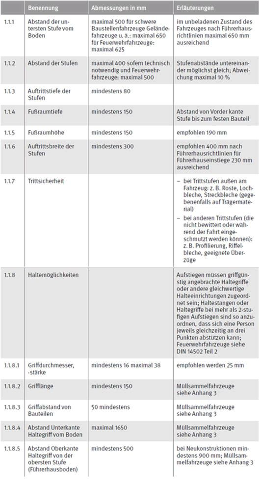
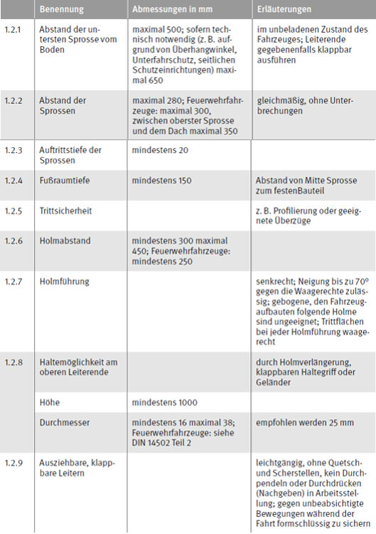
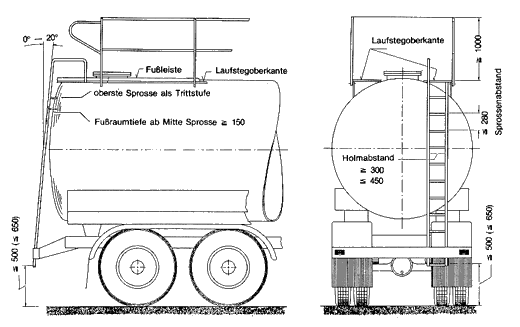
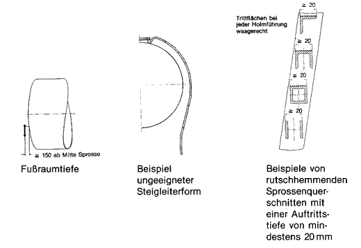
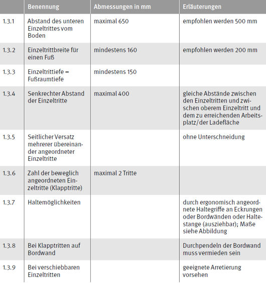
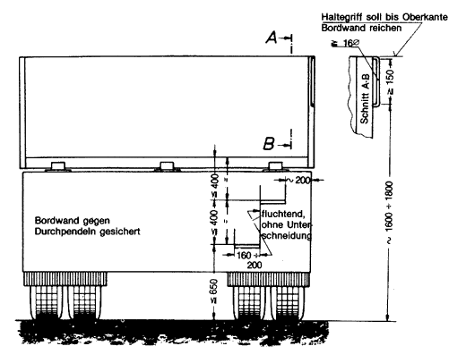

1 Ein- und Ausstiege., Aufstiege
1.1 Stufenaufstiege und zugeordnete Haltemöglichkeiten, Ein- und Ausstiege zum Führerhaus

1.2 Leiteraufstiege, Sprossen und zugeordnete Haltemöglichkeiten


Aufstieg und Übergang zum Laufsteg

1.3 Einzeltrittaufstiege an Bordwänden und zugeordnete Haltemöglichkeiten
Aufstiege mit Einzeitritten sollen nur vorgesehen werden, wenn Leitern oder Trittstufen nicht angebracht werden können; Einzeltritte können auch beweglich (klappbar, verschiebbar) angeordnet sein (z. B. als Klapptritte).


Klapptritt-Aufstieg an einer Bordwand
Zu Klapptritt-Aufstiegen gehören zweckmäßig angeordnete Haltemöglichkeiten. Solche können z. B. in die Eckrunge integriert oder klappbar ausgeführt sein.